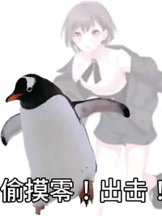
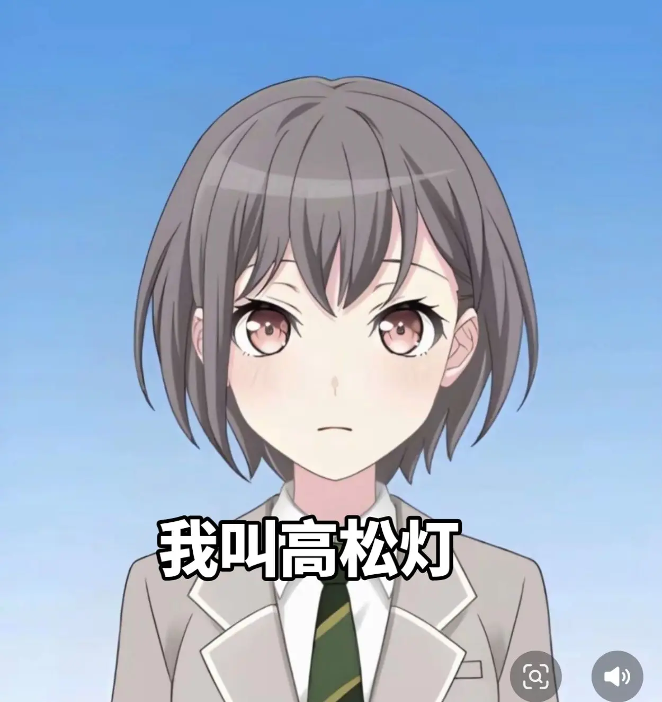

谁是高松灯的中之人？
羊宫妃那是日本的女性声优、歌手。所属公司为青二事务所。

高松灯操纵替身使者

坚决拥护抹茶大芭菲
经历
初中3年级时受动画《妖精的尾巴》中纳兹的台词影响对声优这一职业产生了憧憬，在上高中前将想成为声优的想法告诉父母后受到父母鼓励立下了成为声优的志向。在高中时为了成为声优在课余时间进行一些训练。[
与高松灯的联系
2021年夏天，加入了当时尚未公布的BanG Dream!新乐队（为后来的MyGO!!!!!），开始了秘密练习。此时羊宫为短发，与高松灯一致。加入乐队后开始写MyGO!!!!!日记。[3]
高松灯趣事
- 姓氏“高松”来自东京都丰岛区高松。名字采用的是日文旧字体（燈，日文新字体和简体字一样都是灯），读音“Tomori”更是少见，因此在剧情中就出现了路人读名字时读成“Akari”的桥段；实际上这种读音是动词“灯（とも）る”（发光）的名词形。 或许正因为这一名字读音少见，声优楠木灯盘点动画中名字读音与自己相同的角色时，提到“本季邦邦动画里面的那孩子好像也叫“ともり”吧，是鼓子酱有出演（立希）的那个”，并表示十分惊讶和高兴。[8]
- 在动画中的诸多行为符合阿斯伯格综合征患者的症状，但也有对此表示怀疑的观点[9]。
- 喜欢企鹅，具体的表现包括：在动画第1集中对创可贴上不同企鹅的品种进行详细介绍；在动画第13集到水族馆观赏企鹅等
MyGO!!!!!团员
Gt. 千早爱音
Vo. 高松灯
Ba. 长崎爽世
Gt. 要乐奈
Dr. 椎名立希